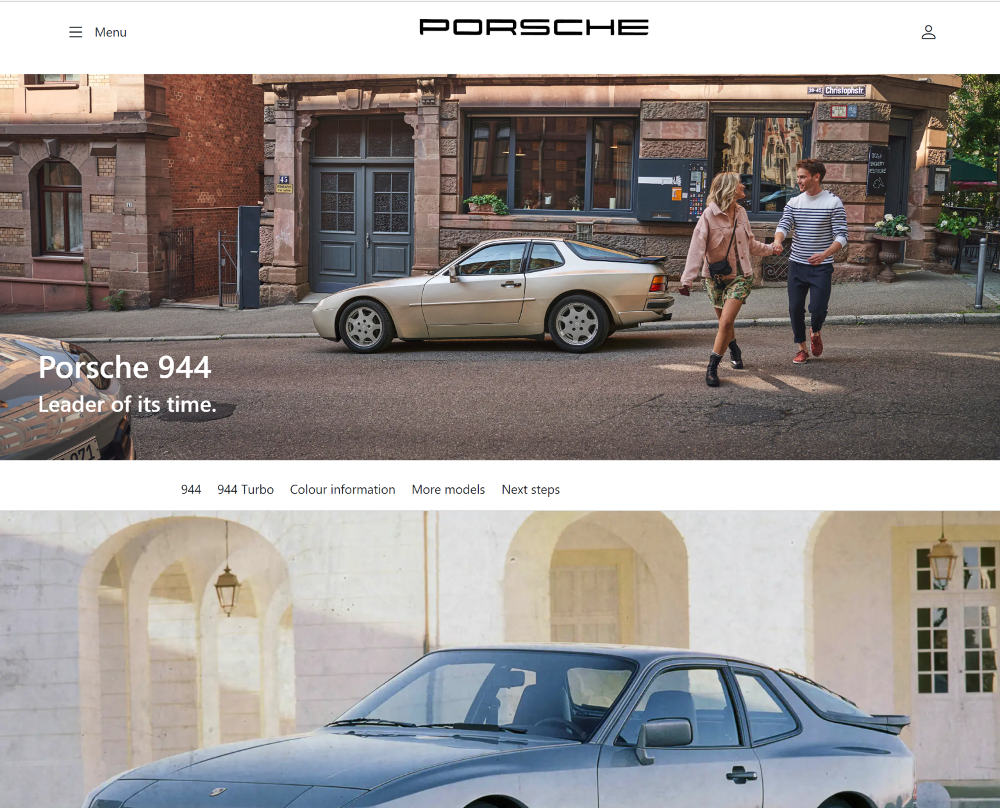
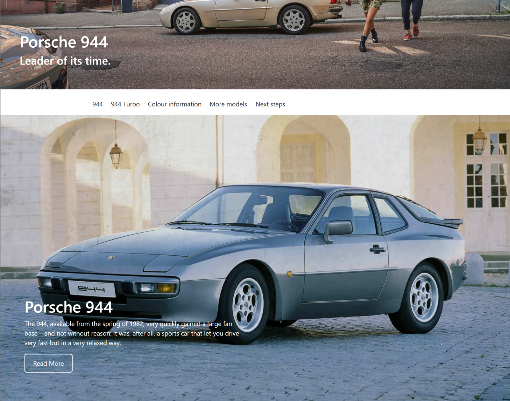
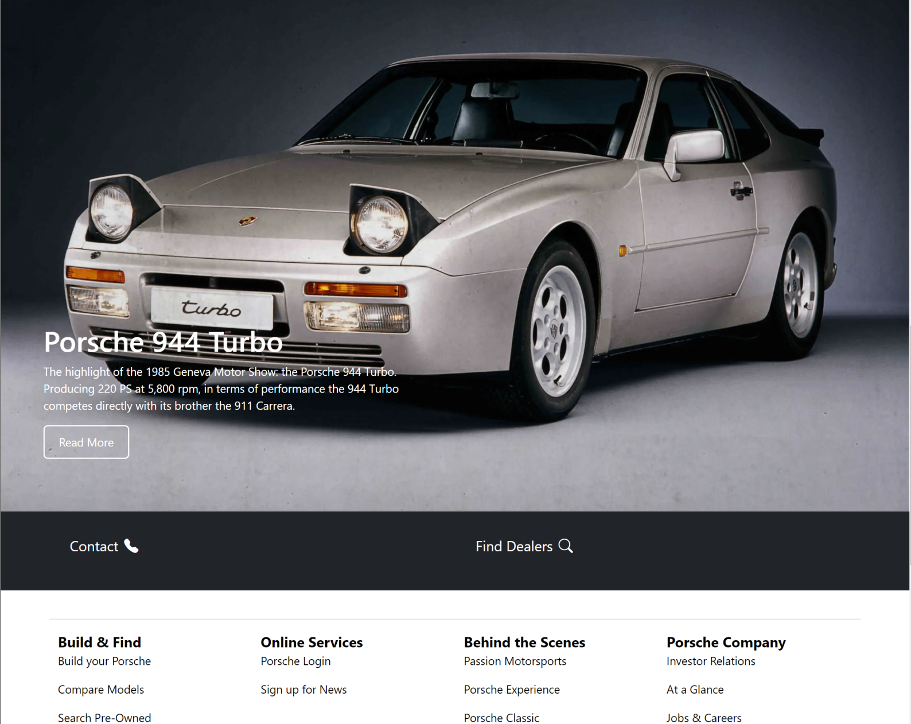
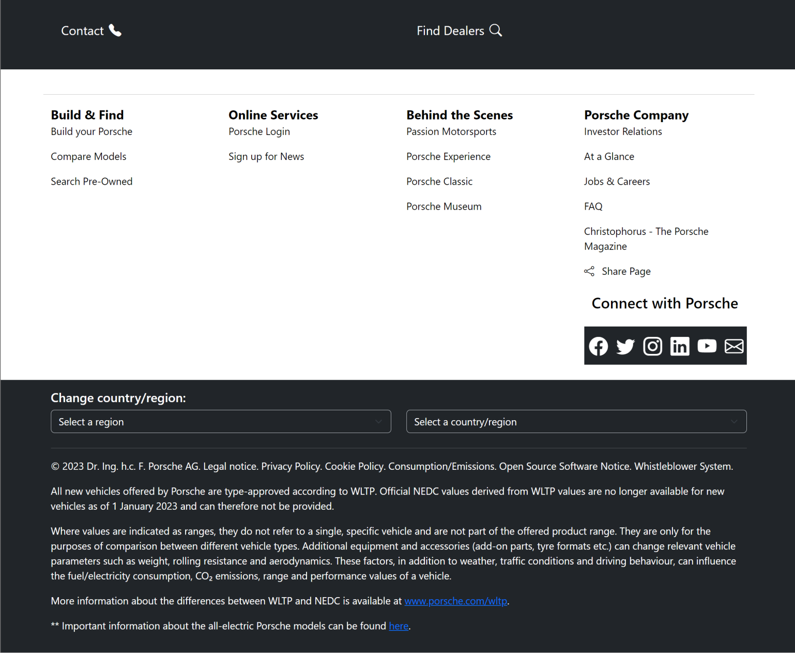

Building websites was one of the first things I learned about when starting Computer Science in middle school. We started with HTML websites that were nothing ut plain paragraphs with headers and maybe a picture. Then, we started to add a touch of color with CSS. As a middle schooler, I knew what I wanted my website to look like but couldn’t get my thoughts on screen. There were clear limitations when using CSS.
User Interface (UI) Frameworks are a crucial component of modern web development. UI is a key part of creating visually appealing websites with responsive web applications. Sure, there are other ways to do it? You could slave away time and energy pounding your CSS to work, but using UI frameworks, like Bootstraps 5, simplifies that process. Learning UI frameworks isn’t a walk in the park, but it allows you to get precise outcomes without needing to do bit-by-bit measurements.
One of the most widely used UI frameworks is Bootstrap 5. It includes a wide range of responsive components and tools, such as navigation bars to make a smoother menu, carousels, modals, and many others. Bootstrap 5 allows users to quickly make fine-tuned edits to their website. Similar to programming languages, Bootstrap also has a learning curve that allows users to dive down the rabbit hole in order to transform the art of creating websites.
One of the primary reasons programmers use Bootstrap 5 is that it is a huge time-saver. Developers can use consistent pre-built components, instead of starting from scratch every time. This is important for having a user-friendly and professional website with seamless designs.
   
In ICS 314, we are learning to apply UI frameworks to an interactive website application. The above pictures are examples of a website I mimicked using HTML, CSS, and Bootstrap 5. Here is the link to the original website that was mimicked.